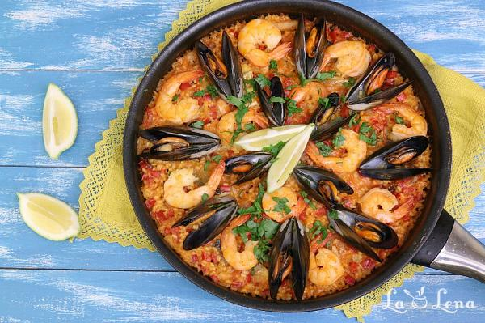
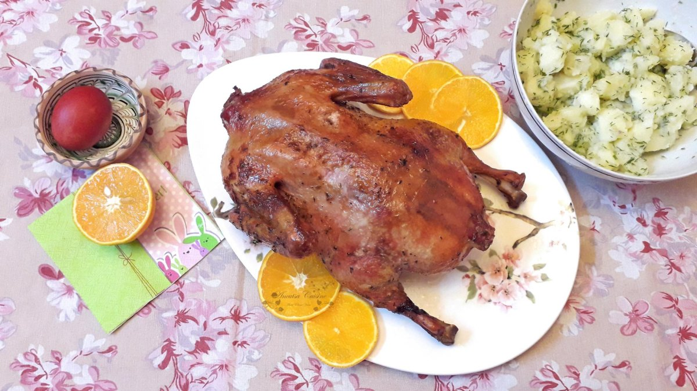
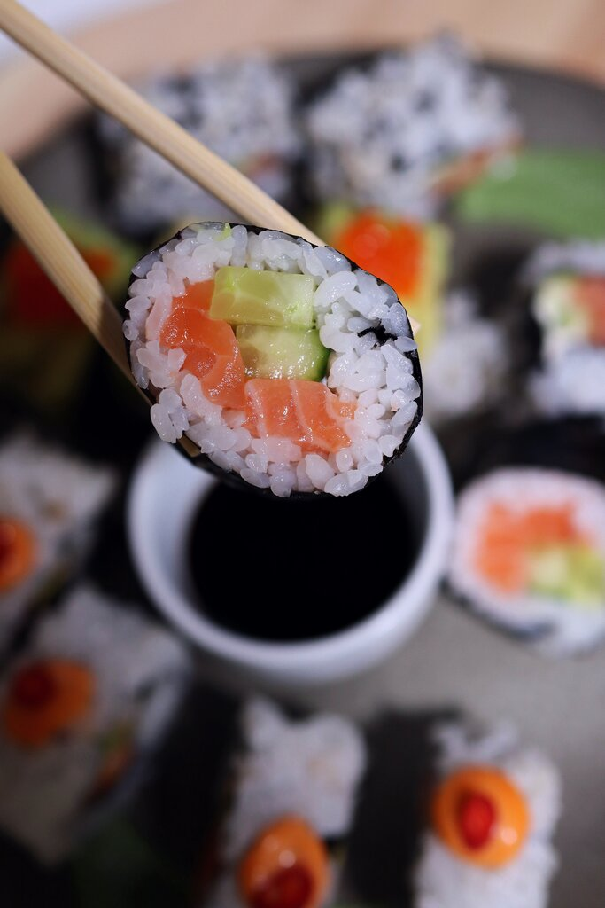

Bine ai venit pe acest site! Aici descoperim retete pentru toate momentele zilei. Pentru a fi la curent va rog sa va abonati.
Retete
Paella cu fructe de mare

Paella cu fructe de mare este un preparat spaniol traditional, gatit intr-o tigaie larga, cu orez aromatizat cu sofran, creveti, midii, calamar si alte fructe de mare, oferind un gust bogat si mediteranean.
Rata la cuptor, cu portocala si vin

Rata la cuptor cu portocala si vin este un preparat rafinat, cu carne frageda, glazurata intr-un sos dulce-acrisor si aromat, perfect pentru mesele festive.
Rata la cuptor, cu portocala si vin

Sushi este un preparat japonez delicat, din orez aromat cu otet, combinat cu peste crud, fructe de mare sau legume, rulat sau modelat cu grija.
Abonare